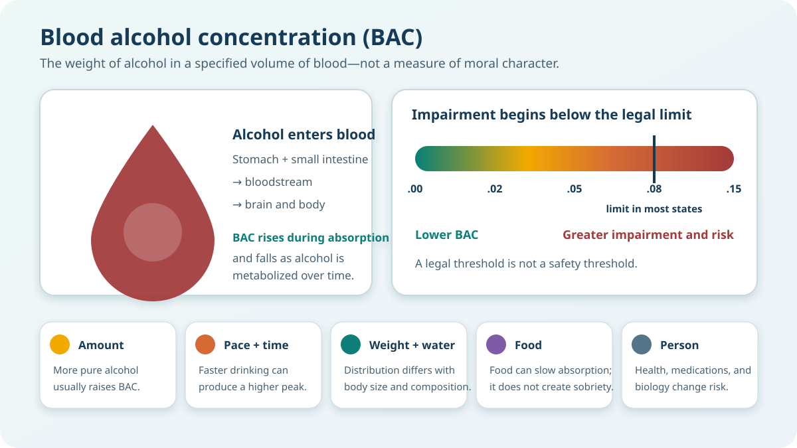

Move a drug marker through a simplified brain pathway, or let it
travel automatically. Then compare how broad stimulant and depressant
patterns change activity throughout the body.
Opening story · The Faces of Meth project
5.1 What Can—and Cannot—Be Read
From a Face?
These are fictional composite portraits, not people from the
original campaign. A face can prompt questions about health, but it
cannot establish which drug someone used or what caused every
visible change.
The Faces of Meth public-education project assembled
sequential booking photographs of people arrested more than once in
Multnomah County, Oregon. The startling comparisons were designed to
make methamphetamine’s physical toll immediately visible. Their
emotional power helped the campaign travel far beyond one county—but
the same power can tempt viewers to treat a photograph as complete
medical and social evidence.
Heavy methamphetamine use can contribute to sleep deprivation,
appetite suppression and weight loss, cardiovascular problems,
anxiety, paranoia, and compulsive skin picking. Severe dental
disease—often called “meth mouth”—has multiple pathways, including dry
mouth, grinding, diet, hygiene, frequency of use, and limited access
to dental care. Illicit production also creates hazards from
corrosive, flammable, and toxic chemicals; however, a street product’s
precise contents and residues cannot be inferred from a person’s
appearance.
The missing comparison group matters. Time between
photographs may also include aging, trauma, unstable housing, poverty,
violence, incarceration, poor nutrition, untreated illness, and
reduced access to healthcare. The photographs document change, but
they do not scientifically isolate how much change was caused by
methamphetamine, illegal-market conditions, punishment, or other
disadvantages.
The project therefore teaches two lessons at once: methamphetamine can
cause serious biological harm, and drug education becomes stigmatizing
when visible suffering is used to reduce a whole person to a
frightening “after” image. Effective public health must explain
mechanisms, conditions, and paths to recovery—not simply invite
disgust.
Carry this question through Section 5: What happens
inside the brain and body, and how do dose, route, product
uncertainty, social conditions, and access to care shape what becomes
visible?
5.2 Interactive brain pathway
Choose a drug, then press Play pathway or drag the
gold marker along the track with a mouse or finger. The explanation
changes at each stage.
Dopamine close-up
Dopamine is not simply a “pleasure chemical.”
It helps signal reward, motivation, salience, learning, and
movement. A rapid rise in reward circuits can contribute to an
intense rush and reinforce cues and behaviors.
What students should notice
This is a conceptual pathway—not a literal map of one
molecule.
A real dose contains enormous numbers of molecules distributed
throughout the body. The track slows the process down so we can
connect delivery, receptors or transporters, brain circuits, and
effects.
5.3 Animated stimulant and
depressant body comparison
Switch patterns to see changes in the animation and vocabulary. The
motion represents broad tendencies—not exact vital-sign measurements.
Opposite-looking effects do not “cancel out.” A
stimulant may make someone feel less sleepy while an opioid, alcohol,
or another depressant continues to suppress breathing or impair
judgment. Cardiovascular strain may be increasing at the same time.
5.4 Alcohol, Intoxication, and
Blood Alcohol Concentration
Intoxication is a temporary change in mental and
physical functioning after a substance enters the body. With alcohol,
increasing exposure can affect attention, judgment, inhibition,
coordination, reaction time, memory, and—at dangerous levels—the brain
systems that support breathing and other vital functions.
Blood alcohol concentration (BAC) expresses the
weight of alcohol in a specified volume of blood, commonly grams per
deciliter (g/dL). BAC is related to impairment, but it is not a
complete description of how a particular person will look, feel, or
behave.

Alcohol-related impairment can begin below the legal driving limit.
A BAC threshold defines a legal boundary; it does not guarantee safe
driving below that number.
From beverage percentage to net alcohol
Beverage size can be misleading. The useful comparison is the amount
of pure alcohol: beverage volume multiplied by alcohol by
volume (ABV). In the United States, one standard drink contains about
0.6 fluid ounces, or 14 grams, of pure alcohol.
Beverage and serving
Typical ABV
Net pure alcohol
Approximate standard drinks
Regular beer, 12 fl oz
5%
12 × .05 = 0.60 fl oz
1
Table wine, 5 fl oz
12%
5 × .12 = 0.60 fl oz
1
Distilled spirits, 1.5 fl oz
40% (80 proof)
1.5 × .40 = 0.60 fl oz
1
Strong beer, 16 fl oz
8%
16 × .08 = 1.28 fl oz
About 2.1
Wine, 9 fl oz
14%
9 × .14 = 1.26 fl oz
About 2.1
Mixed drink
Varies by recipe
Must total every pour
May contain 1, 2, or more
What different BAC levels commonly do
BAC (g/dL)
Typical effects
Effects important for driving
.02
Some loss of judgment; relaxation, warmth, or altered mood may
occur.
Declines in visual tracking and divided attention can begin.
.05
Judgment and alertness decline; inhibition may decrease;
small-muscle control can be affected.
Reduced coordination and tracking; steering and emergency
responses become more difficult.
.08
Balance, speech, vision, reaction time, reasoning,
self-control, and memory can be impaired.
Reduced concentration, speed control, information processing,
visual search, and hazard perception. This is the limit for
most adult drivers in most states—not a safety threshold.
.10
Clear deterioration in reaction time and control; slurred
speech, poor coordination, and slowed thinking may occur.
Lane control and appropriate braking are substantially
reduced.
.15
Major loss of balance and muscle control; vomiting may occur.
Tolerance may change visible signs without removing danger.
Vehicle control, attention, and visual and auditory processing
are substantially impaired.
Why the same number of drinks can produce different results
AmountMore net alcohol generally produces a higher
BAC.
Pace and timeRapid consumption can raise the peak
before metabolism catches up.
Weight and body waterBody size and composition
influence alcohol distribution; height alone is not a dependable
correction.
FoodFood can slow absorption and reduce the peak,
but it does not neutralize alcohol already consumed.
Person and contextSex-related body-water
differences, health, medications, fatigue, tolerance, and other
drugs affect risk and visible impairment.
Never use a chart or online estimate to decide whether to
drive.
People cannot reliably judge their own BAC or impairment, and consumer
breath-testing devices vary in accuracy. If drinking, arrange a sober
ride rather than calculating a “safe” number.
Later application: Section 15 can turn these
variables into a carefully labeled BAC-estimation activity alongside
breath, blood, and other drug-testing tools. Its result should be
presented as an uncertain educational range—not a clearance to drive.
5.5 Set + setting experience
explorer
Set is what a person brings to an experience—their
mood, expectations, health, and prior experience.
Setting is the physical and social environment.
Choose a substance, mindset, environment, and tolerance level to see
how the same exposure may be experienced differently.
1. Substance
2. Set: mood before use
3. Setting: place and people
4. Previous tolerance
Scenario interpretation
Excitement can mask alcohol impairment
Set contributes
Setting contributes
Tolerance contributes
This is not a dose calculator. Set and setting can
change perceived intensity, interpretation, choices, and access to
help. They do not create a safe amount or reliably determine that
someone “needs more” or “needs less.” Amount, strength, timing, food,
body characteristics, metabolism, health, medications, interactions,
and product uncertainty also matter.
5.6 Cannabis and the
“Amotivational Syndrome”
The left side makes the familiar “lazy stoner” stereotype visible;
the right side rejects the idea that one behavior or identity can
predict a whole life. Neither scene diagnoses the person.
Amotivational syndrome is the disputed idea that
sustained cannabis use produces a lasting pattern of apathy, reduced
ambition, and diminished goal-directed behavior. Cannabis can acutely
affect attention, memory, time perception, and willingness to begin or
persist at a task. Very frequent or problematic use can also consume
time and may accompany difficulties in school or work. Those
possibilities do not establish a distinct, universal personality
syndrome.
What some studies find
Some longitudinal research reports associations between cannabis
use and lower academic motivation or self-efficacy. Acute
intoxication may reduce effort on a particular task, and heavier
patterns may have different consequences than occasional use.
What other studies find
Recent controlled studies have found no greater apathy, anhedonia,
or reduced willingness to expend effort among non-acutely
intoxicated users. Reviews describe mixed measures, small samples,
and limited evidence for an enduring syndrome.
The direction problem
Low motivation, depression, trauma, exclusion, school difficulty,
or limited opportunity may precede cannabis use. Cannabis may
contribute, use may follow those conditions, or common causes may
influence both.
The person-and-context rule
Frequency, dose, THC concentration, age, sleep, mental health,
other substances, expectations, resources, and social setting
matter. “Uses marijuana” is not a measurement of motivation.
Why the stereotype often looks white, male, and middle class
Popular portrayals of the unmotivated cannabis user have often
centered a young white middle-class man withdrawing from school,
career, and breadwinner expectations. That image made a perceived loss
of conventional productivity especially visible because it violated
dominant class and gender ideals. It does not mean
cannabis-related impairment occurs only in that group, nor that
research has established a syndrome unique to white middle-class
males.
Possible drug effectWas the person currently intoxicated? What were dose, potency,
frequency, sleep, and other health factors?Social conditionsWere depression, discrimination, caregiving, unemployment, weak
opportunity, trauma, or isolation already affecting effort?The labelWhose reduced productivity is called a moral failure, whose is
treated medically, and whose structural barriers disappear from
the story?
The balanced conclusion: Cannabis may impair
motivation or performance for some people in some conditions. The
evidence does not justify turning that possibility into a fixed
identity or using a culturally narrow stereotype as a diagnosis.
5.7 How to read these models
accurately
Stimulant and depressant describe
broad patterns, not simple up/down switches for every organ. Cocaine
and methamphetamine act differently even though both are stimulants.
Opioids can slow breathing dramatically, while alcohol,
benzodiazepines, and other depressants have different receptor
actions.
Route, dose, formulation, tolerance, health, age, setting,
expectations, and drug interactions all influence what happens.
Sociology adds questions about access, authority, stigma, subcultures,
treatment, and law.
Faupel, C. E., Weaver, G. S., & Corzine, J. (2014).
The sociology of American drug use (3rd ed.). Oxford
University Press.
Lac, A., & Luk, J. W. (2018). Testing the amotivational
syndrome: Marijuana use longitudinally predicts lower self-efficacy
even after controlling for demographics, personality, and alcohol
and cigarette use. Prevention Science, 19, 117–126.
https://doi.org/10.1007/s11121-017-0812-3
Skumlien, M., Mokrysz, C., Freeman, T. P., Valton, V., Wall, M. B.,
Bloomfield, M. A. P., Lees, R., Hines, L. A., Morgan, C. J. A.,
Nutt, D. J., Curran, H. V., & Lawn, W. (2023). Anhedonia,
apathy, pleasure, and effort-based decision-making in adult and
adolescent cannabis users and controls.
International Journal of Neuropsychopharmacology, 26(1),
9–19.
https://doi.org/10.1093/ijnp/pyac056
Shetty, V., Mooney, L. J., Zigler, C. M., Belin, T. R., Murphy, D.,
& Rawson, R. (2016). The relationship between methamphetamine
use and increased dental disease.
Journal of the American Dental Association, 147(11),
875–885.
https://doi.org/10.1016/j.adaj.2016.04.026
Content reviewed: September 2026. This educational
coursebook does not provide medical or legal advice.